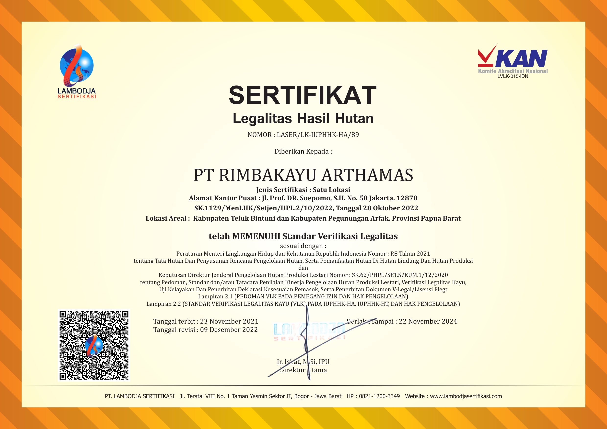
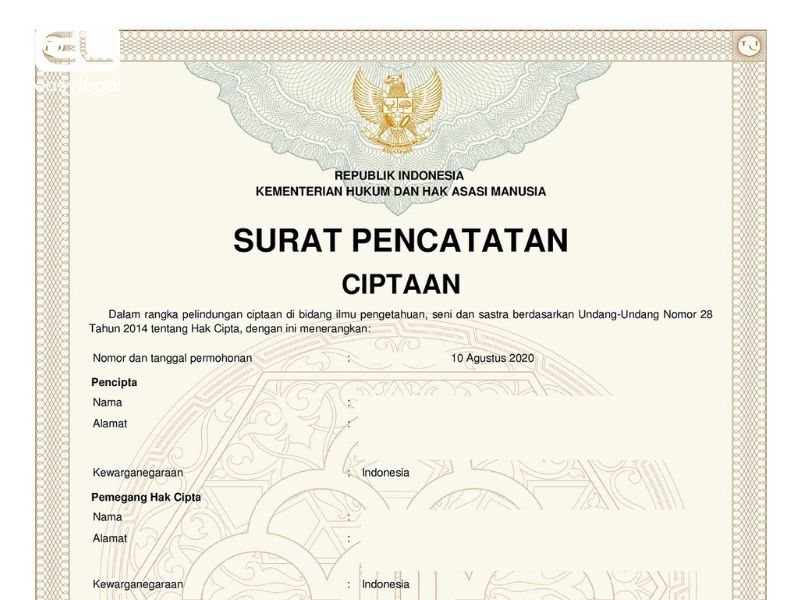
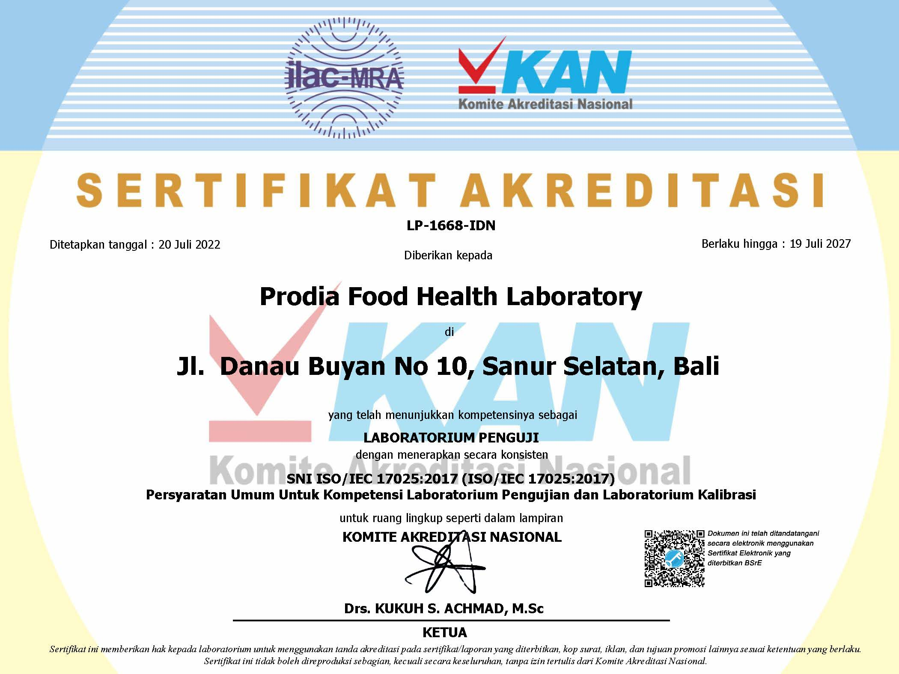

Legalitas dan Validasi Klien
Kami menjamin layanan yang kredibel dan sah secara hukum, didukung oleh pengakuan klien.

Sertifikat Pendirian Firma Hukum

Kartu Anggota PERADI (Perhimpunan Advokat Indonesia)

Testimoni Klien Perorangan

Testimoni Klien Korporasi (Bisnis)